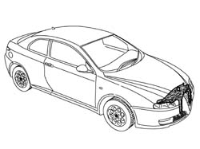
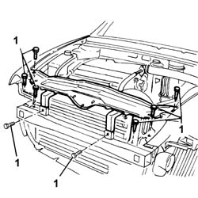
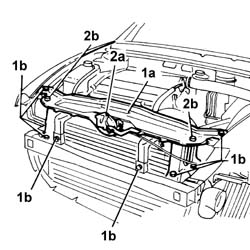
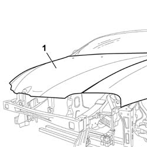

7210A15 R.R. HEADLAMP HOUSING/FRONT WING CROSSMEMBER
- Path
- Procedures > 72 PANELS AND FRAME > 7210 REMOVING REFITTING > 7210A STRUCTURAL ELEMENTS (FRONT PART) > 7210A15 R.R. HEADLAMP HOUSING/FRONT WING CROSSMEMBER
- Kind
- repair procedure (removal / refitting; the operation number is the code)
- Applies to
- all engines; all production periods
- Interactive page
- https://sloeber94.github.io/elrnDB-aGt/en/#/125002021
Applies to: all engines; all production periods
 Removing
Removing
 Refitting
RefittingCheck if any of the connected parts are deformed by checking body alignment dimensions. Use appropriate measurement tools (reference rigs, templates or gauges).
If necessary, straighten the body before removing the part.

Applies to: all engines; all production periods
1. Undo the bolts shown in the figure.
2. Remove the headlamp housing beam from the car.

Applies to: all engines; all production periods
Refitting
Removing1. Provisionally position part (1a) on the car and screw in retaining bolts (1b) without tightening.
2. Fit bonnet lid catch (2a) and both end stops (2b).

Applies to: all engines; all production periods
1. Lower the bonnet lid. Check it is properly aligned and that the gap around the edge is even.

Applies to: all engines; all production periods
Paint the headlamp housing beam in accordance with the specified cycle.
Fit both end stops to the headlamp housing beam.